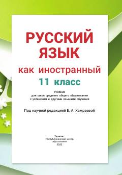

РЯ11-sinflar uchun rus tili darsligi.
Mazkur darslik o'zbek va boshqa tillarda o'qitiladigan maktablarning 11-sinf o'quvchilari uchun rus tilini chet tili sifatida o'rganishga mo'ljallangan. Qo'llanmada nutqiy faoliyatning barcha turlari ustidan tizimli ravishda ishlash, shuningdek, grammatika va madaniyatga oid mavzular yoritilgan.